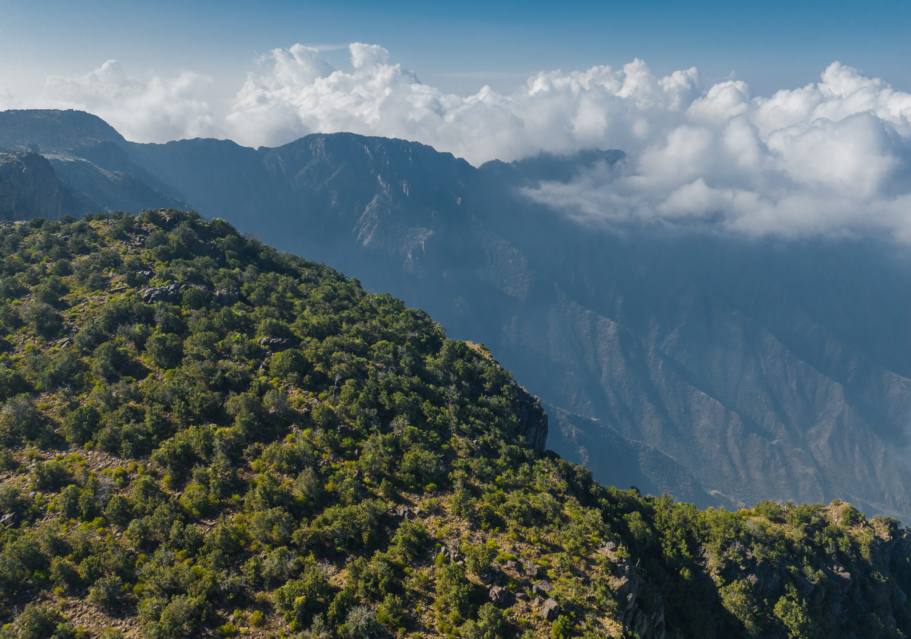

AI-POWERED TOURISM PURCHASING SYSTEM
✅
✅
Yay! Your trip plan is ready

alsuwdah
أبها، السعودية
20 Jan
AAl-Souda is the jewel of Asir, characterized by its stunning natural beauty, with towering mountains and green valleys. It is famous for its mild climate throughout the year, and is considered an ideal destination for nature and adventure lovers. You can enjoy hiking, camping, and taking picturesque photographs.

rijal almaa
أبها، السعودية
21 Jan
Rijal Almaa: The historical jewel of Asir Rijal Almaa is one of the largest tribes in the Asir region of the Kingdom of Saudi Arabia, located about 45 kilometers west of the city of Abha. This region is distinguished by its ancient history, rich heritage, and picturesque nature, making it an attractive tourist destination for many.